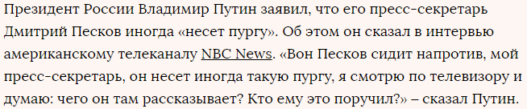
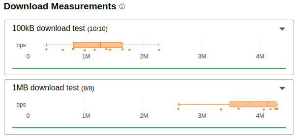
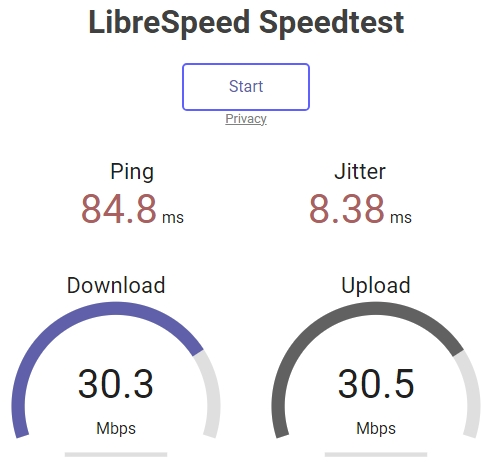

пишут тут в интернетах, что у людей Ютуб завёлся на Wi-Fi. у вас как?
Страница открывается, больше ничего не грузит. Как обычно.
В один прекрасный день… я верил…
$ ytcheck
% Total % Received % Xferd Average Speed Time Time Time Current
Dload Upload Total Spent Left Speed
0 0 0 0 0 0 0 0 --:--:-- 0:00:27 --:--:-- 0
Аватарок нет, превьюшки замедлены или нет, видео не грузит
У кого-то заработал - да, у кого-то провайдеры ещё не успели отключить торможение. Если завтра у всех заработает - то все поймут, что с лета заверения властей про устаревшее оборудование Гугла - наглое вранье.
Либо как обычно у кого-то коробки ушли в обход, и они радуются что Ютуб разблокировали. И потом опять волна сообщений про то что Ютуб перестал работать.
Хороший ход был бы для них это когда трамп закончит войну и вернет бизнес в россию, то тогда магически заработает ютуб
Хах, как раз забавная новость проскочила сегодня, что кое-кому нажаловались, и тот пообещал “посмотреть, разобраться”…
Да кстати. Идеальный был бы перформанс. Молодец, политик, лидер, и боец, и так далее.
Скоро во всех СМИ: Путин смотрит заблокированный ютуб и разбирается 
Как в тех картинках с кимом у монитора и солдатиками сзади
Тред-дубликат удалили, сюда перепощу:
Там еще опросник “У вас работает Youtube?” (39k голосов): 35% - да, заработал, 65% - нет, тупит и глючит.
У меня на мобиле tele2 грузит шортсы вроде, а видео кое-как в 144p. На мобильном МТСе вроде и до этого все грузилось. Ну и на проводе ничего соответственно, как писал выше.
На билайне как не работал так и не работает. Вообще у меня с самого начала всех этих замедлений сайт ютуба спокойно грузился, включая чаты и комменты, а вот видео вечная загрузка. Так что пока ничего не поменялось.
У меня уже месяц как работал без проблем
Так их и не будет, хост под блокировкой. Нужен rewrite на yt4.
он и так работал на мобиле, на компе - нет
Ну, как и у многих - не изменилось ничего. Со скрипом грузятся миниатюрки, вместо видео - бесконечный крутящийся кружок… Ростелеком.
Проверял все еще без изменений. Выглядит честно все это странно.
Выглядит честно все это странно
Ссылаться на Globalcheck:
YouTube снова работает у всех операторов. По крайней мере об этом сообщает сервис Globalcheck.
Это похоже на манипуляцию с новостями, что любят делать СМИ. Предвзятость, освещение только с одного угла.
Globalcheck проверяет только главную страницу.
Может начнут в СМИ форсить, что разблокировали на мобильных операторах (где и так YouTube работал у большинства).
https://ping-admin.com/free_test/result/1731627059u905m6353d8104618810033.html
По Москве стала получше статистика, чем несколько часов назад, тогда только 3 точки могли достучаться, а сейчас уже половина. В Петербурге тоже грузит по этой выборке.
на дальнем востоке вроде как заработал без обходов, по информации от человека. причем даже аватарки грузятся)
Мелкопровайдер в Подмосковье, работало без обхода пару дней, но вчера около 15:00 всё вернулось на круги своя, не обольщайтесь…
обычно изменения на тспу выкатывают как раз с дальнего востока, как было например с дискордом, время покажет
У меня уже как обычно с августа одно и то же, в браузере видео работают, если 3-10 раз перезагрузить страницу, скачать видео через yt-dlp невозможно и за эти месяцы несколько раз работало без обхода.
В качалке прокси указываешь и качает.
Да никто и не думал из адекватных людей на одномоментную “деградацию” оборудования.
поверь, мне в июле-августе в некоторых чатах упорно доказывали именно про оборудование гугла. таких людей больше, чем можно подумать
еще один человек отписал о работе без обходов, на этот раз санкт-петербург, ростелеком, тоже работает даже с аватарками. теория о раскатке от востока к западу отпадает. у меня лично пока что глухо
по факту что мы знаем:
- заработало на мобильном, хотя всегда работало
- у кого-то там, где-то там работает. хотя много у кого было, что временно обратно включался ютуб
по факту ничего не произошло, как будто))
на мобильном мтс до сих пор замедление, но не в ноль, и отсутствие аватарок, по факту ничего не поменялось
Начал работать сайт и даже аватарки, но не видео Ростов ТТК
У меня на одном из провайдеров что-то в учетке сломалось, с логином видосы просто отваливаются, как и стримы. Без логина всё окей.
С мобильного клиента всё тоже окей.
Freetube тоже ок - кстати, советую тем, кто парится по поводу конфиденциальности.
Не думаю, что это связано с блокировками, но всё же.
Санкт-Петербург на мтс работает, даже с аватарками. До этого тоже работало, но с затыками и эту неделю не работало вообще. На проводном ртк не проверял пока.
NetByNet aka Мегафон - не работает
Вот он феодализм провайдеров - у кого-то ослабили замедление, у кого-то нет. Остальные ждут указаний от РКН.
Ростелеком домашний, на пк 8к60 грузит моментально
Поди опять косяк с тспу
Проверь дис и другие сайты. Если на них блокировка висит, это не косяк тспу, это ютуб снова открыли.
дискорд работает, инста нет, нтс нет
у каждого кто отписывал мне о разблокировке ютуба, это не являлось байпасом у тспу, проверили у каждого наличие остальных блокировок
получается дискорд вместе с ютубом тоже открывают?)
нет никакой разблокировки
в сми (или откуда там это взяли) просто пытаются захайпить на очередном инфоповоде.
разблокировка есть, как минимум у нескольких моих знакомых, и это не является байпасом тспу. кстати с момента написания еще у нескольких человек открылось (крым)
вобщем пока ничего не ясно, только ждать
открывается этот пул?
https://rr7---sn-gvnuxaxjvh-aome.googlevideo.com
проверим позже, но он даже на моем сервере с настроенным обходом виснет на client hello
аналогично
проверил на hetzner сервере, тоже виснет на client hello, это сам сервак мертвый походу
нет) просто там вайтлистинг для сети ртк)
что в очередной раз говорит о том, что никакой глобальной разблокировки нет
А вобще… Что нам это даст? С впс слезть уже не получится, слишком много всего в блоке. Так, чисто повод для обсуждения)
Значит у меня уже месяц ютуб на святом духе работает… Коннект сразу с астралом, в обход коробки 
даже с московской впски виснет) короче время покажет, что происходит
Как минимум минус три стратегии запрета. Писать конфиги придется меньше.
а с ртк работает
тогда я не понимаю, как это относится вообще к блокировке/разблокировки, если это как я понял внутренний ggc в сети ртк
Будет. Видимо, сверху пришло распоряжение в роспозор перестать страдать херней. Разблокировать одномоментно не получится, единого техцентра нет, каждый территориальный орган вручную накатывает конфиги.
судя по тому что происходит, они вручную лазят в каждый рандомный тспу и меняют прямо сейчас
Все правильно. Даже если серв внутренний, то он стоит до коробки.
Для тех, кто пользуется прокси, можно будет пускать трафик ютуба напрямую, что снизит загруженность канала (если сервер раздали нескольким людям) и уменьшит косые взгляды в сторону айпишника (в теории)
Если заработает это конечно хорошо, но в целом уже как-то пофиг. Стратегии гудбая и бистро работают больше месяца, “не протухли”. На кухонном планшете бесплатный прокси. За собой заметил, что блокировка даже на пользу пошла. Через телефон перестал использовать ютуб т.к. туда ничего не ставил. Раньше было удобно залипнуть на какую-нибудь хрень в ютубе, достал телефон, врубил, перешел на другой ролик, прочитал коммент, отписал и понеслось. А сейчас из-за того, что больше через комп смотрю, то тупо лень идти включать ради “залипания”, идешь уже посмотреть прям что-то конкретное, да и глазам полегче)
Выглядит это абсолютно предсказуемо. Я эти вбросы вижу с августа, но обычно в коментах на ютубе. К кому из этих комментаторов не зайди в профиль - регистрация “вчера” 
Я не спорю, есть те, у кого работает по различным причинам, но это не статистическая картина ни разу.
Даже здесь на форуме, все ссылаются на “друга подруги телки брата”, о котором все слышали, но никто не видел 
Ну пусть даже у 10% будет работать, предположим. Что вам легче что ли станет от этого? Это не меняет ничего. Предпосылок к разблокировке ютуба нет и не предвидится, я бы даже сказал - наоборот.
Полностью с вами солидарен 
И это тоже верно, как будто пересел с adsl на оптоволокно 
я вообще заметил, что после замедления “в ноль” ютуб наоборот сильно ускорился при использовании запрета)
“блокировка даже на пользу пошла”
Мне тоже, но по другим причинам) Давно хотелось разобраться в впс, протоколах и прочем, но было лень… А тут такой повод)) Еще и торсервер для лампы рядом с x-ui поставил, а не через телефон как раньше, вобще огонь)
Спасибо за блокировки, вобщем xD
у меня целых 3 пути обхода активны на разные сценарии)
С торрентами осторожнее, не все хостинги их разрешают через себя гнать. Лучше проверить условия пользования, чтобы не словить бан впс.
Ну на аезе торсерв ставится штатными средствами+есть инструкция у них же на сайте. На ллх не стал ставить)
Пока все новости о разблокировке выглядят как пиздеж
Просто блокировка же не сплошная, поэтому и называется замедлением. Иногда работает, иногда нет
на данный момент разблокировано лишь точечно в некоторых местах, а сми действительно раздувают раньше времени
И это тоже, только не с протоколами, в это начал вникать, когда пошла волна блокировок впн, а открытие было именно гудбай, считай бесплатный впн без ограничения по скорости и объему трафика.
Ночью действительно Youtube заработал без какого-либо ВПН: домашний дом.ру и домашний мегафон.
блин даже если тебе разрешили залезать на твои локальные сервера - это не является разблокировкой
не понимаю в чем прикол повторять фейки из сми
В том то и дело, что у меня нет локальных серверов, не завезли. У меня открыты абсолютно все ggc по стране (за исключением некоторых локальных после тспу) и даже некоторые европейские, которые рандомно подключаются. Уже месяц как. Я проверял, курлится, без всякого обхода.
Изначально у меня блокировался не только видеопоток, но и сам сайт. Причем наглухо, не замедлением, а именно дропом.
расходимся, кина не будет

Трамп приде порядок наведе
Наоборот, собираемся

Песков назвал проблемы с YouTube не приоритетными для россиян.
Видеохостинг YouTube в России действительно работает с перебоями, что во многом связано с отказом Google менять свое оборудование, но для россиян сегодня эта проблема не в приоритете. Об этом заявил пресс-секретарь российского президента Дмитрий Песков на вопрос, когда в России восстановят полноценный доступ к YouTube, передает корреспондент РБК.
«YouTube не включают-выключают — он то замедляется, то не замедляется. С точки зрения техники, да и технологии этого замедления и незамедления нужно обращаться с вопросами в Роскомнадзор, они должны предоставить информацию на этот счет», — сказал Песков.
Он подтвердил, что данная тема обсуждалась на встрече президента с режиссером Кареном Шахназаровым. «Действительно, да, затрагивалась эта тема, и действительно президент сказал, что он посмотрит на эту проблему, хотя там есть и часть этой проблемы, которая связана исключительно с позицией хозяина этого сервиса. Вы знаете позицию хозяина этого сервиса, она направлена на то, чтобы не выполнять соответствующие законы Российской Федерации. Не выполняя законы, соответственно, компания не меняет, не обновляет необходимое оборудование», — заявил Песков.
Вместе с тем он отметил, что проблема с работой YouTube никоим образом не относится к перечню приоритетных у россиян. «Поэтому такая постановка вопроса «когда россиянам вернут YouTube» — я бы с ней не согласился, это совсем не главное сейчас», — отметил пресс-секретарь главы государства.
ахахах под этот тезис можно че угодно подогнать, дорожные службы в россии работают с перебоями, все это связанно с коррупцией и модернизировать отрасль отказываются, это для народа не приоритет. не удержался 
$ curl -4ko /dev/null --connect-to ::speedtest.selectel.ru https://test.googlevideo.com/10MB
% Total % Received % Xferd Average Speed Time Time Time Current
Dload Upload Total Spent Left Speed
0 0 0 0 0 0 0 0 --:--:-- 0:00:30 --:--:-- 0
curl: (28) Operation timed out after 30001 milliseconds with 0 out of 0 bytes received
А причем тут замедления до несуществующих доменов? Какое отношение test.googlevideo.com имеет к несоблюдению законов гуглом?
РТ новосиб, ютуб на удивление и правдо работает, посмотрим на долго ли
Сказ о том, как создать судьбоносное событие на пустом месте
 Провайдерам прямо очень невыгодно блокировать Youtube. Нагрузка на службу поддержки адова. Когда шум и проверки сошли на нет, довольно много провайдеров втихую открыли его обратно. Простите, за открытие истины
Провайдерам прямо очень невыгодно блокировать Youtube. Нагрузка на службу поддержки адова. Когда шум и проверки сошли на нет, довольно много провайдеров втихую открыли его обратно. Простите, за открытие истины
 И тут какой-то селебрити в Москве поговорил с Путиным и крутанул историю про Youtube в публичном пространстве
И тут какой-то селебрити в Москве поговорил с Путиным и крутанул историю про Youtube в публичном пространстве
 Кто-то побежал в GlobalCheck, увидел там отсутствие блокировки и сложил 2+2. И выложил в публичный доступ. И поняслась
Кто-то побежал в GlobalCheck, увидел там отсутствие блокировки и сложил 2+2. И выложил в публичный доступ. И поняслась
 Однако, у GlobalCheck не очень много публичный зондов. А тот, кто скриншот сделал, не в курсе, что GlobalCheck в бесплатной версии давно показывает, что YouTube не блокируется
Однако, у GlobalCheck не очень много публичный зондов. А тот, кто скриншот сделал, не в курсе, что GlobalCheck в бесплатной версии давно показывает, что YouTube не блокируется
Не произошло ровным счётом ничего!
 Песков подлил масла в огонь с утра
Песков подлил масла в огонь с утра
Провайдер не может открыть заблокированный ресурс, он не управляет блокировками. А вот крутануть обходной маршрут вполне может. Скорее всего так и реализовано.
Это типа, сервис снова доступен, но сервера протухли, поэтому недоступен. Но он доступен. Правда.
Сказочные д… сетевые управляторы.
Это скорей маленькие провайдеры могут, а крупные вряд ли они под колпаком, ркн по шапке надает
У меня . На Таттелеком YouTube работаетНа полную скорость. 4K. Только. Не популярное видео долго грузится. 3 секунды
У меня крупный провайдер, несколько десятков тысяч клиентов.
И, насколько я понимаю, РКН они вертели ввиду, у них клиентская база под угрозой.
“крупные вряд ли они под колпаком”
Ростелеком
МГТС, главная страница грузится, видео - нет. Путин сказал разблокировать YouTube - разблокировали. Про GCC Путин ничего не говорил. 
Если ркн узнает о том, что траффик в обход тспу идёт то у провайдера могут лицензию отнять, там уже никакой базы вообще не будет
Не отнимут. Альтернатив нет, весь город без интернета останется. А может и весь регион, 2.5 лямов населения (имею ввиду основного регионального контрактора, это через него всё открыто).
Я по работе относительно имею представление, что там у них внутри происходит.
Тем более, что нигде в контрактах не прописано, что нельзя каналы в обход коробки пускать. Там четко сказано, что коробка должна стоять между клиентом и интернетом, а должен ли маршрут быть единственным - ни слова. Где-то тут на форуме кидали статейку про контракты на установку тспу, там по бумагам получается что этого оборудования вообще как бы не существует.
Ютуба нету в реестре. Провайдер помогает чинить кэш которые злой гугл не чинит
Провайдер обязан пускать трафик ТОЛЬКО через ТСПУ. Даже если проблемы.
Где такое сказано? Нигде.
А нельзя прову взятку дать? У нас везде ментам взятки дают, почему провам нельзя
ЕМНИП, там автотесты гоняются регулярно, устанешь всем взятки давать.
например
Екатеринбург, РТК, в начале врубили Ютуб, сейчас его отключили(
Печально, думал можно наконец опять напрямую через телевизор смотреть, но воз и ныне там…
Хахахахахаха… ржомба…
РКН не уполномочен привлекать к ответственности за невыполнение требований. Они там сами законов не знают. Это надзорный, а не правоохранительный орган. Для взыскания штрафов нужно подавать иск в суд, а суд еще должен доказать, что нарушение существовало.
А касаемо ютуба, то провайдер сам может привлечь роспозор к ответственности, как минимум, за причинение материального ущерба. Прецеденты уже были. Поэтому если провайдер каким-то образом обошел тспу для нормальной работы трубы, то это нельзя считать нарушением.
Надо всем провайдер срочно сообщить, что бы тоже так делать начали. Потому-что МОЖНО! )
Они и так знают.
Раз знают, чего не делают? Ждут когда деньги платить люди перестанут и на)(уй пошлют?
Ну как это не делают. Я же говорю, у меня в регионе работает. По РФ у многих работает, вон писали выше. На треть страны по проводу точно, по мобильной так вообще у всех без проблем.
Спойлер
У пчёл без изменений, после 8 ноября вновь замедляет.
Патверждаю. Впечатление что они коробки заменяют на новые. А все разговоры о любви к народу это просто совпадение.
По проводу не работает , хватит нести чушь , у кого из большой тройки работает с пруфами по проводу Ютуб?
Мегафон, видео грузятся, аватарки канала и юзеров - нет
Пруфы? заливать видео или скрины с телефона лень =)
Замена коробок идет хотплагом. Если бы их меняли последовательно, то открывались бы все заблокированные ресурсы.
А тут только труба у людей туда-сюда ходит. Значит, это либо разблокировка, либо обходной маршрут. Третьего не дано.
МТС, ничего никогда не разблокировано было
Да, подтверждаю у Ростелекома Ютуб работать вообще перестал. Еще вчера, скрипя, но работал через VPN. А сегодня совсем сдох.
Подтверждаю. Через безквик сдохло вообще все, с квиком кое-как открывает, но видео не грузит
Подскажите, что делать? Уже что то совсем достали эти экзерсисы властей с ютубом!
Мне, если можно, исключительно, как для полных идиотов - у меня уже все настолько в голове перемешалось, что ничего уже не понимаю: какой программой пользоваться, какие файлы или не файлы, куда добавлять. Мне бы пошаговую с картинками подробную инструкцию. Потому что я большинство из того, что вы здесь пишете, я честно читаю, но я вааще не понимаю ничего! Для меня это звучит как язык инопланетян! Чувствую себя, как прогулявший все пары студент, которому за одну ночь нужно выучить все темы враз и все лекции усвоить.
выглядит сейчас все именно так
скачать сборку Запрета, запустить пару .cmd файлов, всё предельно просто
ну у меня вот РТК в Москве. в Октябре открыли трубу - почти весь месяц кайфовал)) ближе к ноябрю опять прикрыли
Ютуб носится как ненормальный, никаких обходов, и квик, и не квик, и так, и эдак…
только Ютуб, а другие сайты все равно только с обходом?
какой регион?
Да, другие с обходом, даже дис.
Всё, что в базах ркн - закрыто, как и полагается.
Юг РФ, район Краснодарского края.

странно это. Ну то есть ситуация обычная, что у кого-то Ютуб работает какое-то время, а потом опять не работает спустя месяц например. На этом форуме пишут что-то вроде “если коробка ушла в обход, значит большинство заблокированных сайтов должны открываться”. Но разве коробка не может уйти в обход для конкретного сайта?
Не Ростелеком ли часом? 
ты на его ник посмотри, он просто отобрал коробку у провайдера)
ага, тогда это всё объясняет 
Линуксом. Потом само придет. Я сделал правильное решение когда на него перешел еще до войны. Знал что вот такая суматоха как сейчас начнетса, но у меня уже было все настроено, хотя бы на базовом уровне для работы с сетями.
это звучит как язык инопланетян!
Братан… я до линукса точно также себя чувствовал. Пока я был на винде в моих скитаниях, я все чаще находил софт которые лучше всего был реализован на линуксе вроде yt-dlp или ffmpeg. Все инструкции для них мне тогда казались как иероглифы древней цивилизации… но я их очень ХОТЕЛ использовать, что у меня аж появился свой FOMO. Все самое крутое было на линуксе вроде iptables и netfilter, или cryptsetup да всякие fdisk програмы которые я тоже ХОТЕЛ.
Не коробка в обход ходит, а пров настраивает маршруты в обход коробки. Ибо по закону о связи обязан предоставлять услуги, не нарушающие законодательство. Ютуб - не нарушает, так как ни указа, ни закона - ничего нет. А то что роспозор там блокирует - это не конечная инстанция, по факту эта организация не имеет право влиять на предоставление незапрещенных услуг. Поэтому любые новости про якобы “штрафы провайдерам за обход коробок” конкретно по вопросу ютуба можно смело игнорить, советую как пользователям, так и провайдерам.
Через локальную подсеть. Пров дочерний РТК.
Удали ссылку. А то сейчас понабегут, потом весь форум будет засран жалобами.
Там инструкция по сборке запрета с вирусом.
Вирус на гитхабе с 6,5к звёздами? Мощно
Да, мощно.
Там даже хэши разные.
Ну и
с хэшами (в winws) выяснили, там совпадают с оригинальным запретом
Получается оригинальный Zapret от болвана тоже вирус. Как же так… 
Брат написал, что у него на ростелекоме ютуб заработал без обхода.
Регион новосибирский.
А у меня на йоте (правда, с модемным тарифом) без изменений (tcp почти задушен, quic ~40 кбайт/с в curl, но я уже об этом сообщал).
У меня крупный провайдер, несколько десятков тысяч клиентов.
И, насколько я понимаю, РКН они вертели ввиду, у них клиентская база под угрозой.Если ркн узнает о том, что траффик в обход тспу идёт то у провайдера могут лицензию отнять, там уже никакой базы вообще не будет
Не отнимут. Альтернатив нет, весь город без интернета останется. А может и весь регион, 2.5 лямов населения
Так если пров монополист, куда пользователи-то уйдут? Телевизор смотреть станут? Тогда да.
Единственное что в том гайде может напрячь, это мод на офф клиент варпа андоидовского, что добавляет конечную точку в новую версию. Потому что качается с 4pda/телеги (Но по другому это не реализовать). Все остальные ссылки ведут на официальные гитхабы/маркеты. Так что не знаю что ты мне тут затереть пытаешься
Ахаха, смешно.
Сначала научись правильно проверять файлы, потом скриншот выбрасывай.
“на ростелекоме ютуб заработал без обхода.
Регион новосибирский.”
Подтверждаю. Даже пруфы выше кидал
Но почему то и дискорд работает. Все остальное в блоке. Работающий дискорд наводит на мысли что глюк тспу, но при этом все остальное то не работает… Хз
Это известный автор репакер запрета, нет там вирусов. Ну или не должно было бы быть. Он ещё с сентября месяца существует.
В последние версии вроде даже добавил скачивание exe файлов с официального репозитория чтобы точно никто ничего не подумал.
Да что вы говорите? ) Какой инноватор
Ну ладно, или аккуратно взял некие скрипты откуда-то (интересно откуда) на использование 
Почитал… гайд по ссылке
Спойлер
Ахахха, мда… 
Ничего он не прикрутил, все бинарники на месте (внутри архива), чисто батник для проверки обновления самого ZDY прикрутил.
Переодически отключаю обход - ну а вдруг! Но нет, все так же - все заблокировано (
Когда блок снимут Ютуб начнет тупить, будут появляться внезапные ресеты. Стратегия будет сразу влетать в сервак. Я уже два или три раза у себя такое наблюдал, когда в сентябре туда-сюда коробку гоняли.
У меня со вчерашнего другая проблема. С активной учеткой перестают грузиться видео, ggc отдает куски, первый нормально проходит, а потом они просто пустые, какие-то символические пару байт. Главное - не ресет, ни зависание - все штатно, будто видео работает. В любом браузере, с обоих провайдеров, на разные сервера. Зато без учётки все нормально. Видимо, хухел что-то сломал. Или начинают какой-то теневой бан на нашу геолокацию.
Я и с учеткой и без тестирую - разницы нет.
летом еще читал про теневые баны, вы там 99%
Теневой бан по всем декстопным браузерам? Что-то новенькое.
В приложухе на смартфоне ведь нормально работает.
вот про это не помню что люди писали, но звучит не логично если бы учётка была там
Вот и я о том же. Проблема только на декстопе в браузерах с авторизированной учеткой. Без авторизации всё работает отлично. Учетной записи уже 15 лет, таких проблем не замечал.
Сомнительно, у меня на РТ пару недель назад тоже ютуб отпускало, вместе с дискордом, а вот нтц и инстаграм нет, но зато всякие трекеры и что ещё более странно - медуза, например, начала открываться, так что скорее всего просто недостаточно хорошо проверяете насколько разблокировалось то, что не должно было. Проверьте медузу, если откроется значит точно ничего не открывают, просто байпас
Медуза и рутрекер не открываются
теперь и у меня работает без обходов, аватарки грузятся в том числе
на пару с ютубом дискорд тоже разбанился, очень интересно
Работал только в выходные. Теперь будут только так включать и еще по праздникам?
Свободный доступ в интернет теперь привилегия однако.
А не должны, эти как раз в реестре. Поэтому у тебя все по ошибке разблокировалось
У меня во всём регионе значит тоже по ошибке уже больше месяца работает ютуб и аватарки? 
Ошибок никаких нет, просто провайдеры решили обойти незаконную блокировку сами. А ytimg видимо просто за компанию, чтобы весь сервис работал.
Могу предположить что Ютуб работает в городах которые граничат с соседними государствами например с Казахстаном. Так как трафик могут продавать соседям. И Ркн прекрасно об этом знают.
Пермский край, Ростелеком.
Как не работало с момента блокировки так и не работает.
Это никак не связано. Магистрали открытые, блокируется только на потребительском уровне.
я больше уверен про то, что не блокируется на тех провах, которые по той или иной причине договорились с ркн.
щас чекнул на двух провах для юр лиц, предоставляющих сервера в цодах, ютуб доступен.
речь идет о провах, которые общаются с ркн напрямую.
правда там redirector что то странное выдает next hop бла бла, я так понимаю - это когда нет локальных сервов
Чекал трафик, у меня, хоть и открытый ютуб, все равно ходит через тспу, потому что стратегии типа фейка работают, они четко влетают в коробку. То есть можно даже запустить дурилку и труба всё равно продолжит работать без ошибок. Единственное, что блокируется, это квик как протокол, но он дурится, на гуглвидео я использую одну только эту стратегию, хотя и без нее работает по 1/1 так же хорошо.
Вообще, непонятно, какие могут быть договоренности с роспозором, если официально нигде блок ютуба не указан, даже юридически такого нет, поэтому региональные представительства могут просто не выполнять требования центра.
блокировками занимается грчц, а не региональные представительства, не?
А при чем тут радиочастотный центр? А, ну да.
Хотя, он может выступать подрядчиком. Но техзадание все равно выдается региональщиками.
Насколько я знаю, грчц не везде занимается настройкой коробок.
еще кстати на мобильном мтс появились аватарки и пропало замедление, но дискорд забанен
Единственное, что блокируется, это квик как протокол
Надо же. А на десктопной йоте наоборот. quic меньше зарезан, а tcp очень сильно.
Вот и все, буквально 20 мин назад перестал работать дискорд и ютубчик снова. Аж ~4 дня проработал
У меня на одном из прове работает и работает хорошо, уже недели 2-3 наверное, а вот на другом балалайка. Он что то там наваял, что нифига не работает уже 1-2 недели и ничего не помогает, надыбал я хитрый скачивальшик и так, скачал, посмотрел, единственный минус, я иноских смотрел блогеров, а у меня стоит переводчик звука и как вот теперь переводить, наломали мне с наглухо блокировкой гуглвидео на одном из прове
Можно конечно было позвонить, рассказать что не будь, но лишний раз по фанарям звонить не хочу, потому что либо включат, либо выключат везде у всех по этой же схеме, поэтому просто наблюдаю
РТ новосиб тоже поступают сведения, что сегодня начались лаги.
Зашел через WARP и пишет " Пожалуйста, подождите, мы стараемся ускорить YouTube, страница будет перезагружена" кто нибудь сталкивался с этим?
Это делает расширение наподобие юбуст.
У меня один раз на два дня Youtube заработал и снова все замедлили
Ютуб снова не работает. Какая неожиданность
Вчера ютуб заработал. Сегодня оказалось, что и дискорд работает, и даже этот сайт. При этом привычные какие-нибудь новостные сайты всё так же заблокированы.
ртк среднее поволжье, ютюб без обхода бесконечная загрузка даже начальной страницы и этот сайт тоже в блоке
Один из провов который включил ютуб, сегодня проверил, на компе не работает, но работает в телевизоре. Времени разбираться не было, но сам прикол, вот им делать нечего, фигнёй страдают ))
ТТК-Центр. Кое-как загружается главная, подолгу порциями прогружаются превьюшки, комменты грузятся более-менее сносно, видео бесконечная загрузка. Сказывается устаревание оборудования, кхекхе
Ютуб хоть и не разблочили, но блокировку упростили. Теперь работает даже с гудбаем, с фейк-виз-сни + 3-хбайтовый фейк.
Я бы не спешил с выводами. Заметил такую хрень, что сложность блокировки плавает, будто знаешь временами послабление, а потом опять гайки затягивают. Может даже от времени суток зависеть… ) Ну или они тупо перебирают конфиги коробки пытаясь усложнить нам жизнь, из-за этого перебора случается так что начинает работать то что раньше отказывалось уже.
Вариантов почему так может происходить масса.
От плановых работ до ошибок обслуживающего персонала.
Похоже на load balance. Бедные тспу… работают как раки на галерах…
Нижний Новгород, Ростелеком, заработало без блокировок, вообще сначала бывший коллега в чат сообщил, а я за ним проверил. Хотя, мне кажется, это просто пьяный админ на клаве уснул и вырубил, завтра починит)
ага, тоже проверил, ютуб заработал.
может быть конечно, но ведь другие то сайты не работают, может в итоге действительно разблокируют, трафика из-за ютуба зарубеж стало много утекать.
Хоть раз такое было что если они что-то внесли то потом разблокировали?
да скорее всего всё это до обновления оборудования, посмотрим
+1
Сравнительно давно, ещё в октябре полностью ушёл на zapret, ибо gbDPI заблочили наглухо.
А 2-3 недели назад думаю, дай паприколу запущу старичка. Перед удалением с винта…
Вжик, и работает! ))) До сих пор zapret не запускаю.
уже починили)) недолго музыка играла
Р*телеком, Северо-Запад. В четверг сначала затянули гайки, так что ютуб стал через 30 секунд ломаться при любой стратегии. А потом все резко разблокировали, уже трое суток работает и ютуб с аватарками, и инстаграм, и твиттер, и этот сайт, и torproject. Но при этом все еще есть заблокированные вроде рутрекера или quora.com.
Да, админ протрезвел) Тоже все заглохло.
А я теперь zapret даже не выключаю, так и хожу через него с нетбука, с планшета - очень удобно, повезло мне настроить это чудо.
Время от времени отключаю его и пробую запустить Ютуб - нет, не работает. Еще командой curl проверяю - тоже не работает. Не поймать мне такой момент, чтобы работал без обхода.
Проводной провайдер районного масштаба.
Похоже на overload. Беднинькие тспу… проработали как крабэ на галерах и сломались…
Хоть раз такое было что если они что-то внесли то потом разблокировали?
Такое бывало. Заблокировали Telegram, потом разблокировали.
А в Бразилии так было с X/Twitter.
Подтверждаю, что старые стратегии для гудбая ожили
уфанет в обед перестал на дефолтной из nfqws-keenetic работать. подбирал кто какая сейчас?
Не работает через провод.
Ростелеком, краснодарский край ютуб заработал без впн.
На мобильном МТС заметил замедление Ютуба, или меня глючит
Прошло еще 3 дня. Разблокировали все остальное, включая квору и медузу. Пока недоступен только рутор, на него видимо отдельная коробка выделена, это и по стратегиям было заметно.
Краснодар, Ростелеком. Ютуб работает без обходов, как и данный сайт (ntc.paty), как и X(Twitter), и рутрекер. Возможно еще что-то, но проверял на них.
Скрепный ростелеком. Краснодарский край. обычно блокировки росCUMпозора сюда прилетали моментально. А сегодня вдруг заработало вообще всё. даже то, что было заблокировано еще в период мезозоя- типа rutracker.org
может в крс-ий край в ящик тспу дрынадрон прилетел, а у нас как было глухо так и осталось, все в блоке и видимо так и останется
Краснодар, Роостелеком, работает вообще все
Хочу в Краснодарский край))
У пчел ютуб все замедляют
Вы реально обсуждаете сотовых операторов? Серьёзно? Платить деньги им, а они вам 1 гб скоростной ютуба на 1 месяц дают.
Я больше не пользуюсь сотовых инетом. Теперь только старая классика и только безлимитный.
Всмысле домашний? А как тогда в интернет вне дома выходить?
Нет, не глючит вас, МТС мобильный, тоже самое.
Вне дома в интернет лучше не выходить. gps если для машины нужно рабоатет без интернета
Я еще лет 5 назад забросил смартфоны, потому что перестал видеть в них хорошее будущее
Краснодарский край, Анапа, Ростелеком
Уже 4 день абсолютно все работает, видимо ТСПУ в байпасе по какой то причине.
Что характерно, в начале блокировок Ютюба, в те незапамятные времена, так называемый оператор Йота решил присоединиться к всеобщему шабашу операторов по замедлению , прошел примерно месяц, и, внезапно, Ютюб заработал как и до блокировок, то есть без тормозов и лагов каких бы то ни было, я уж обрадовался, что и средства обхода больше не нужны, но , опять же внезапно, Йота решила видимо что хватит баловать абонентов, и опять рубанула скорость, речь о wi-fi роутере конечно же, их мобильным интернетом не пользуюсь. На наводящий вопрос ТП Йоты, что это было и доколе, был ответ, что они со своей стороны никаких ограничений не вводят, что конечно же не так, ибо Ютюб через впн работает штатно. Довольно странные конечно метаморфозы.
Для особо одаренных рассказываю. Провайдер не занимается блокировкой ютуба.
Данные действия производит ваше государство в лице подразделения ГКРЧ - ЦМУ ССОП
Йота решила видимо что хватит баловать абонентов, и опять рубанула скорость, речь о wi-fi роутере конечно же, их мобильным интернетом не пользуюсь
Тариф для модема? 4G для дома, который. Проверил, по началу было много разрывов, но потом quic по прежнему в среднем 40-50 кбайт/с остался.
Я еще лет 5 назад забросил смартфоны, потому что перестал видеть в них хорошее будущее
На смартфонах удобно читать/слушать книги.
Для этого не нужен интернет
счастливый человек, которому не нужно получать сообщения от сотрдников/одногруппников/одноклассников
Бывает. У нас, мелкого московского провайдера, отрыгнул недавно ТСПУ на неделю. Помимо ютьюба, стали открываться все неугодные сайты типа медузы, твиттера, нтс.пати.
Абоненты естественно были счастливы, думали оттепель наступила. Но потом в ГКРЧ проснулись и начали присылать письма счастья.
Да, 4G, роутер домашний. Примерно два месяца нормальной работы Ютюба, и с недавних пор все вернулось на круги своя. Вот и думай что это было за временное просветление. Явно ТСПУ не работало все эти два месяца, может чуть больше даже.
А на каких девайсах смотрели?
Хочется понять использовался ли QUIC протокол, т.к. его режут меньше.
Скажем, если это телек, то там скорее всего не QUIC.
4G, роутер домашний
Вообще скорость интернета устраивает? У меня тариф 5 мбит/с сейчас, а в speedtest вот такое позорище.

{kind=link}
{kind=link}
{kind=link}
{kind=link}
{kind=link}
{kind=link}
{kind=link}
{kind=link}
К слову, на больших кусках ситуация получше.

Зачем нам 5G говорили они.
Нет, ну у меня ситуация чуть лучше конечно, но тоже не фонтан

Да и как такая скорость может устраивать, смешно конечно, это скорость скорее начала нулевых, про 5G остается только мечтать.
Смотрел на ПК собственно, на телек придется пробросить впн, или с сервака своего подать, по возможности, QUIC да, задействован.
Снова появилась проблема 59 секунды.
Кто еще пострадал?